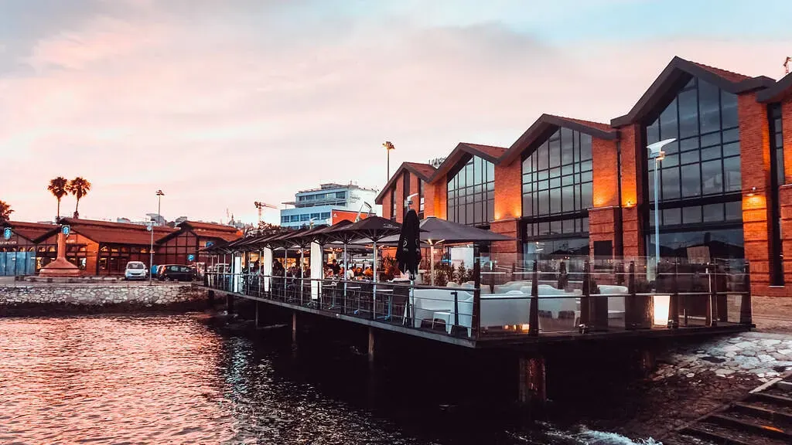
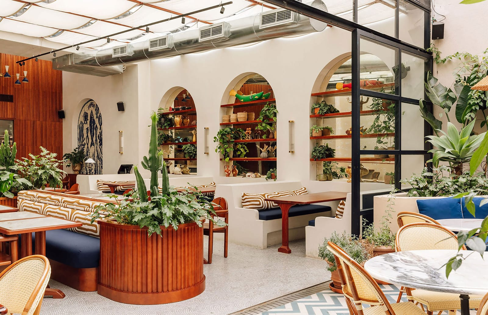
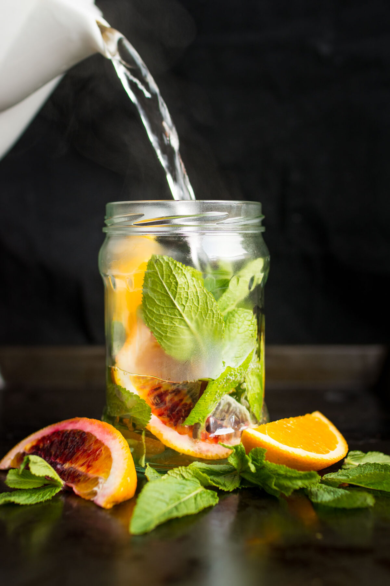

Maré Azul Lisbon, Portugal


Starter: Garlic prawns in olive oil with crusty bread
The prawns arrived sizzling in a clay dish, swimming in golden olive oil with plenty of garlic and a hint of chilli. They were plump, sweet and perfectly cooked. The crusty bread was essential for mopping up every last drop of that delicious oil.
Main: Grilled salmon with salsa verde and roasted baby potatoes, paired with an orange and mint cooler
The salmon was beautifully grilled, crispy on the outside and soft and flaky inside. The salsa verde added a fresh, herby tang that lifted the rich fish perfectly, and the roasted baby potatoes were golden and crispy. The orange and mint cooler was refreshing and bright, and its citrus notes paired wonderfully with the salmon and herbs.

Dessert: Pastéis de nata
No visit to Lisbon is complete without pastéis de nata, and these were some of the best I’ve tasted. The pastry was crisp and flaky, and the custard was creamy with a lightly caramelised top. A sprinkle of cinnamon made them absolutely irresistible.